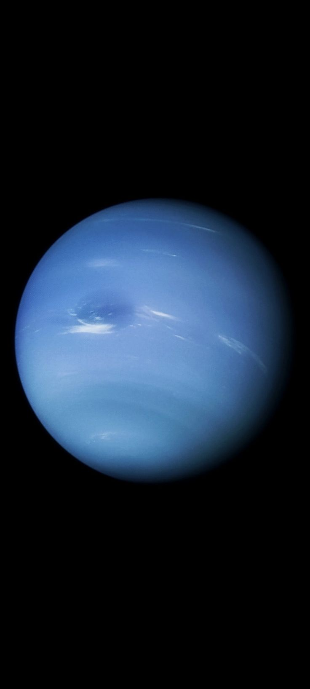

Neptune — The Windy Blue Giant
Quick Stats
Mean Radius: 24,622 km
Mass: 1.024 × 10²⁶ kg
Orbital Period: 164.8 Earth years
Rotation Period: ~16.11 hours
Axial Tilt: 28.32°
Distance: ~4.5B km from Sun
Atmosphere
- Mainly hydrogen, helium, and methane (gives blue color)
- Fastest winds in the Solar System — up to 2,100 km/h
- Dynamic weather patterns including dark spots and white storms
Interior
- Small rocky core surrounded by icy mantle (water, ammonia, methane)
- Transitions to a dense, superheated atmosphere
Rings & Moons
- 5 faint ring arcs, mostly dust and ice particles
- 14 known moons — Triton is largest and orbits retrograde
Exploration
- Visited only once — Voyager 2 flyby in 1989
- Revealed Great Dark Spot and active atmosphere
Fun Fact
Triton may be a captured Kuiper Belt object — and it's geologically active with cryovolcanoes!